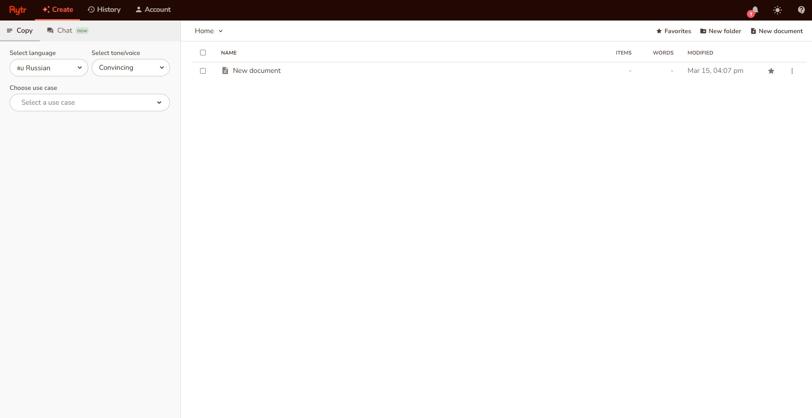

Rytr
Rytr - нейросеть, которая специализируется на текстовом контенте: постах в блог, сценариях, рекламных слоганах и так далее. Бот общается на русском и позволяет выбрать манеру общения.
В сервисе есть 40 готовых шаблонов, которые помогут быстро написать текст на разные темы. При этом разработчики Rytr.me заявляют о том, что при создании текстов бот использует модели AIDA и PAS.
